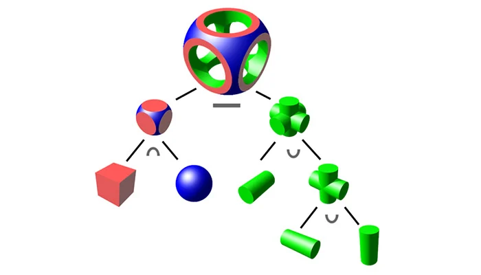

It is based on CSG (Constructive Solid Geometry) to create solid models, you can always make your model more complex by adding more shapes.
In more concrete terms, all you have to do is select one of the available shapes, add or remove material and voila you’re done!
For example, you could start with a cylinder before adding triangles, circles, cones, etc.
The shape can then be moved and rotated, allowing users to see it from all angle.

Here is a tutorial video which will help you mto understand how to use 3d modeling in TinkerCAD: